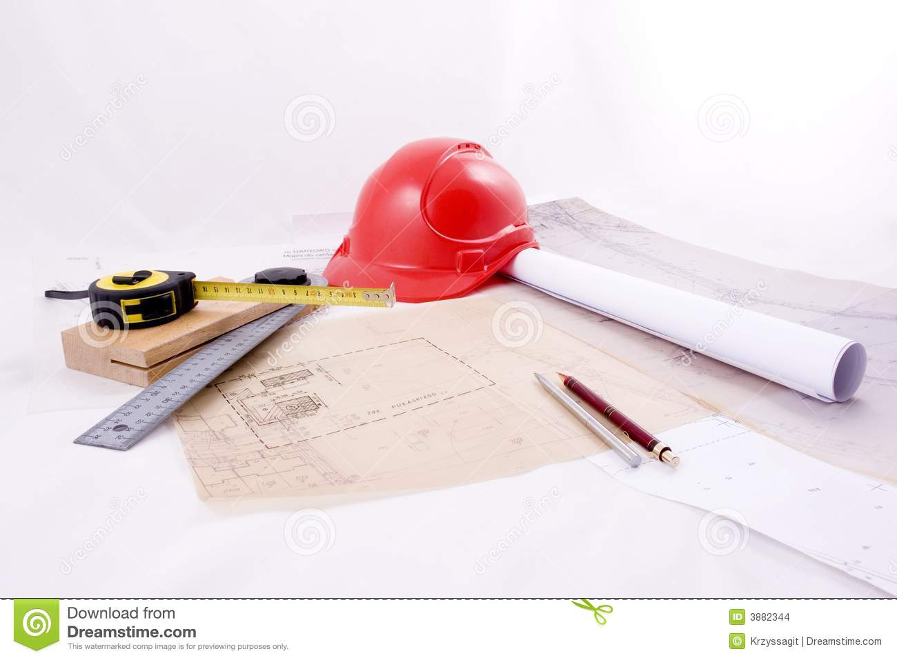

Welcome to Architektur
Architektur Studieren: Inhalte, Ablauf, Berufschancen
2020.12.13 11:09
COVID-19 Digital studieren in Zeiten von Corona. Alle Infos zur Digitalisierung der Hochschulen hier Award 2020 Gesamtranking Beliebteste Hochschulen Beliebteste Universitäten Hochschulen Studiengänge Alle Studiengänge Bachelor Studium Master Studium Duales Studium Studienorte Unternehmen Berufe Berufe im Detail Stellenanzeigen Bewerten! home Home chevron_right Studiengänge chevron_right Technik & Ingenieurwesen chevron_right Architektur chevron_right Architektur Studium Architektur school 133 Studiengänge account_balance 67 Hochschulen schedule 2 bis 22 Semester school Master, Diplom, Bachelor, Akademiebrief info Vollzeit, Teilzeit, Dual, Berufsbegleitend account_balance 44 Fachhochschulen, 17 Universitäten, 6 Kunst- / Musikhochschulen apps Alle Infos school Studiengänge 133 room Studienorte Studiengänge im Fokus Infoprofil IUBH Berufsbegleitendes Studium Architektur Infoprofil Uni Weimar Architektur Infoprofil Technische Hochschule Lübeck Architektur Infoprofil Technische Hochschule Lübeck Architektur Infoprofil Berlin International Architecture Infoprofil Fachhochschule Erfurt Architektur Infoprofil Frankfurt UAS Inclusive Design Infoprofil Hochschule Coburg Architektur Infoprofil SRH Hochschule Heidelberg Architektur Infoprofil Fachhochschule Erfurt Architektur Infoprofil Alanus Hochschule Architektur Infoprofil IUBH Duales Studium Architektur Infoprofil SRH Hochschule Heidelberg Architektur Sponsored
Architektur studieren
Architektur studieren bildet Dich dazu aus, Bauwerke zu planen , zu entwerfen und zu gestalten . Das Besondere am Studiengang Architektur ist die Kombination aus künstlerischer Kreativität und handfestem Ingenieurwissen . Die Architektur gilt als klassische Kunstform und übt einen großen Einfluss auf die menschliche Wahrnehmung aus. Die Bauwerke einer Region repräsentieren häufig deren Kultur, Wirtschaftslage oder auch das Klima. Hast Du Architektur studiert, kannst Du mit Deinen Ideen ganze Stadtbilder konzipieren und die Wirkung Deiner Gebäude auf die Umgebung bestimmen.
account_balance Die Alanus Hochschule empfiehlt Alanus Hochschule Architektur (B.A.) 4.7 11 Bewertungen 100% WeiterempfehlungDu hast den Traum, das Erscheinungsbild einer Stadt mitzubestimmen und mit Deinen kreativen Ideen sowohl praktische als auch schmuckvolle Bauwerke zu entwerfen? Dann empfiehlt Dir die Alanus Hochschule ihren Bachelor Studiengang Architektur (B.A.).
In 6 Semestern erwirbst Du spezifisches Fachwissen, indem Du Dich unter anderem mit Innen- und Stadträumen sowie den Grundlagen des Bauens auseinandersetzt. Im Rahmen von Begleitfächern erlernst Du berufsspezifische Techniken wie den Modellbau oder das computergestützte Zeichnen und erfährst mehr über die Baukultur aus geschichtlicher, rechtlicher sowie ökonomischer Perspektive.
Ein mehrmonatiges studienbegleitendes Praktikum in einem Architekturbüro gibt Dir die Gelegenheit, an echten Bauprojekten mitzuarbeiten. Zudem kannst Du an der Alanus Hochschule auch den weiterführenden Master Studiengang Architektur absolvieren, den Du meist für die Zulassung als Architekt benötigst.
Zum Studium des Anbieters SponsoredWelche Inhalte erwarten mich?
Nicht jeder Studiengang ist von Anfang an so praxisnah, wie der Studiengang Architektur. Schon zu Beginn orientieren sich die Inhalte des Studiums an konkreten Bauprojekten. Dabei ist die Umsetzbarkeit Deiner Ideen stets genauso wichtig wie die Kreativität Deines Entwurfes. Aus diesem Grund lernst Du auch bautechnische Grundlagen, wie:
Bauphysik Baustatik Baustoffkunde Bauchemie Tragwerkslehre Sanitärtechnik Heiztechnik Elektrotechnik Betonbau Holzbau StahlbauDa auch in der Architekturbranche die Bereiche Management und Kalkulation immer wichtiger werden, besuchst Du auch Seminare in:
Baumanagement Bauleitung Bauplanung BaurechtSelbstverständlich stehen in dem Studiengang auch klassische Fächer der Architektur auf dem Stundenplan. Unter anderem stehen im Studiengang der jeweiligen Institute folgende Veranstaltungen im Vorlesungsverzeichnis:
Gebäudekunde Darstellungstechnik Baukonstruktion Entwerfen Bau- und KunstgeschichteAußerdem lernst Du, mit CAD-Anwendungen umzugehen. Das sind computergestützte Designprogramme, mit denen Du Deine Entwürfe gestaltest.
Beliebteste Studiengänge
Infoprofil IUBH Duales Studium - 12 Standorte Architektur (B.A.) group 7 Semester launch www.iubh-dualesstudium.de 4.0 100% Weiterempfehlung 62 Bewertungen FH Münster - Münster Architektur (B.A.) group 6 Semester 4.0 94% Weiterempfehlung 34 Bewertungen Uni Stuttgart - Stuttgart Architektur und Stadtplanung (B.Sc.) group 6 Semester 4.0 94% Weiterempfehlung 31 Bewertungen Hochschule Bochum - Bochum Architektur (B.Sc.) group 8 Semester 3.9 94% Weiterempfehlung 34 Bewertungen RWTH Aachen - Aachen Architektur (B.Sc.) group 6 Semester 4.1 86% Weiterempfehlung 37 Bewertungen Alle Studiengänge arrow_forward clearStelle Deine Frage an aktuelle Studierende
Deine Frage senden wir aktuellen Studierenden zu, die Dir mit Ihrer Erfahrung zur Seite stehen. Sobald eine Antwort eingeht, informieren wir Dich per E-Mail. Noch ein letzter Schritt check_circle Bitte klick nun auf den Link in der E-Mail, die wir Dir geschickt haben. Erst dann können wir Deine Frage an aktuelle Studierende weiterleiten.Interessenten fragen Studenten
Alina: Welche Laptops sind gut fürs Architektur Studium? Me: Macbook Pro zb, auf jeden Fall etwas mit guter Leistung. Programme die mit komplizierten Grafiken arbeiten laufen sonst zu langsam um gut arbeiten zu können. Ein, zwei Programme laufen nur auf Windows, aber das kann man ja auch auf einem Mac installieren (Stichwort Bootcamp Partition oder Parallels). 15.10.2020 - RWTH-Aachen Alle 3 Antworten anzeigen Denis: Verdient man während des Studiums auch Geld oder erst nachdem Studium ? Lukas: Da das Studium sehr zeitintensiv ist, bleibt nicht viel Zeit für Nebenjobs. Beispielsweise am Samstag kann man jedoch einer Nebentätigkeit nachgehen, wenn nicht gerade Projektabgaben anstehen. 23.10.2020 - TU-München Antwort anzeigen Maurice: Wie wichtig ist die künstlerische Begabung und Interesse, wenn man Architekt werden will? Paulina: Nach meinen ersten Erfahrungen im 1. Semester, würde ich schon sagen, dass man eine gewisse künstlerische Begabung mitbringen sollte. Einmal um gute Noten vom Dozenten zu bekommen, aber viel wichtiger, musst du im Arbeitsalltag dazu in der Lage sein, deine Ideen in Form von Freihandzeichnungen zu... Weiterlesen arrow_downward Paulina: Nach meinen ersten Erfahrungen im 1. Semester, würde ich schon sagen, dass man eine gewisse künstlerische Begabung mitbringen sollte. Einmal um gute Noten vom Dozenten zu bekommen, aber viel wichtiger, musst du im Arbeitsalltag dazu in der Lage sein, deine Ideen in Form von Freihandzeichnungen zu Papier zu bringen. 26.11.2020 - iubh-dual Antwort anzeigenNoch Fragen?
lightbulb_outline Dir ist noch etwas unklar? Dann hast Du hier die Möglichkeit, Deine Frage direkt an aktuelle Studierende zu stellen. Jetzt Frage stellen info Fernstudium als Alternative? IUBH Fernstudium Architektur (B.A.) 4.5 12 Bewertungen 100% WeiterempfehlungGebäude zu konstruieren und damit ein Stadtbild nachhaltig zu prägen, ist Dein größter Wunsch? Dann bietet sich der Bachelor Architektur (B.A.) der IUBH Internationale Hochschule im Fernstudium für Dich an. Diesen absolvierst Du innerhalb von 6 Semestern dank der Lernplattform komplett online.
Während Deines Fernstudiengangs beschäftigst Du Dich mit den Themen Baustoffkunde, Baukonstruktion und arbeitest Dich in die Geschichte des Baus ein. Darüber hinaus stehen Module wie Baubetriebswirtschaft und Städtebau auf Deinem Plan. Außerdem schulst Du Deine künstlerischen Fähigkeiten in den Bereichen Darstellen und Entwerfen. So lernst Du im Laufe Deines Studiums zum Beispiel, mit CAD-Programmen am Computer umzugehen.
Mithilfe von Entwurfsprojekten kannst Du Dein Wissen praktisch anwenden. Im letzten Semester hast Du die Möglichkeit, Dich für zwei Spezialisierungen wie Smart Building oder Sustainable Building zu entscheiden.
Zum Fernstudiengang des Anbieters SponsoredAblauf & Abschluss
Du beginnst Dein Architekturstudium im Bachelor Studiengang mit den Grundlagen der theoretischen Planung. Diese beinhaltet meist Module zu Gestaltung, Entwurf und Baustoffkunde. Später kommen immer mehr praktische Übungen in Projektarbeiten hinzu.
Mit etwas Glück bekommst Du im Architektur Studium sogar schon Aufgaben zu realen Bauprojekten und erarbeitest konkrete Entwürfe zu unterschiedlichen Bauvorhaben. Häufig arbeitest Du auch in kleinen Gruppen mit Deinen Kommilitonen zusammen an einem Projekt. Manch ein Studiengang beinhaltet darüber hinaus ein Praxissemester . Eine Besonderheit des Architektur Studiums im Vergleich mit anderen Studiengängen ist die Form der Bachelorarbeit. Sie ist an den meisten Instituten keine rein theoretische wissenschaftliche Abhandlung, sondern ein anwendungsbezogenes Modell eines möglichen Bauvorhabens.
Um später als zugelassener Architekt arbeiten zu dürfen, ist es wichtig, dass Du im Anschluss an Dein Bachelor Studium ein Master Studium absolvierst. Im Zuge dessen vertiefst Du Dein Wissen in den unterschiedlichen Fachbereichen der Architektur, wie Denkmalpflege , ökologisches Bauen , Städtebau oder Immobilienökonomie . Eine Besonderheit des Architektur Studiums ist, dass Du sowohl den Bachelor und Master of Arts als auch den Bachelor und Master of Science oder Engineering machen kannst.
Wichtig bei Deiner Studienplanung: Achte auf die Kammerfähigkeit Deines Studiengangs. Um die Berufsbezeichnung ‚Architekt‘ führen zu dürfen, musst Du in der Architektenkammer Deines Bundeslandes eingetragen sein. Die Voraussetzungen für den Eintrag erfährst Du bei der jeweiligen Kammer. Eine der Voraussetzungen ist beispielsweise, mindestens drei bis vier Jahre zu studieren.
Du bist praktisch veranlagt und möchtest Dein Wissen am liebsten direkt in der Arbeitswelt anwenden? Dann entscheide Dich alternativ für das duale Studium Architektur.Welche Voraussetzungen muss ich erfüllen?
Der Zugang zum Architektur Studiengang ist oft über einen Numerus clausus (NC) geregelt. Mit einem Abitur- oder Fachabiturdurchschnitt von 1,9 bis 3,2 kannst Du Deine Bewerbung auf einen Studienplatz mit guten Chancen einreichen.
Du willst Architektur studieren und hast kein Abitur? Einige Institute bieten alternativ auch eine Eignungsprüfung an, bei der Du Dein gestalterisches Talent zeigen kannst. Eine weitere Möglichkeit, Dich erfolgreich für einen Architektur Studiengang zu bewerben, ist der Nachweis Deiner beruflichen Qualifikation und Arbeitserfahrung. Informationen dazu bekommst Du von der Studienberatung Deiner Wunschhochschule.
Ist der Studiengang der richtige für mich?
Du wirst Dich im Architektur Studiengang wohlfühlen, wenn Du kreativ bist, ein gutes räumliches Vorstellungsvermögen besitzt und gern im Team arbeitest. Obwohl es sich bei Architektur um Baukunst handelt, solltest Du die technischen und wirtschaftlichen Anteile im Studium nicht unterschätzen.
Als Absolvent des Architekturstudiums bist Du ein echter Allrounder und hauptverantwortlicher Ansprechpartner auf der Baustelle Deines Gebäudes. Daher ist ein physikalisches und technisches Interesse eine wichtige Voraussetzung für Studieninteressierte. Auch ein gutes mathematisches Grundverständnis ist hilfreich, da Du nicht nur Baupläne, sondern auch Kostenkalkulationen aufstellst. Mit guten Schulnoten in Kunst und Naturwissenschaften kannst Du sehr gut Architektur studieren.
Disziplin 7/10 Naturwissenschaftliches Verständnis 7/10 Abstraktes Denken 9/10 Technikverständnis 6/10 Künstlerische Begabung 9/10 Kreativität 10/10Architektur studieren: Das solltest Du wissen
Der Studiengang Architektur befindet sich in stetigem Wandel, da sich aktuelle gesellschaftliche, geographische und wirtschaftliche Ereignisse immer auch auf die Bauprojekte einer Region auswirken. Gegenwärtig sind beispielsweise der Energieverbrauch von Bauwerken und ökologisches Bauen Topthemen in der Baubranche.
Die klassische Architekturausbildung ist als eigenständiger Studiengang nicht mit Landschafts- und Innenarchitektur zu vergleichen. Ziele und Projekte dieser Fächer sind dafür zu unterschiedlich. Wenn Du Dich mehr für Innenarchitektur oder Landschaftsarchitektur interessierst, solltest Du darüber nachdenken, diesen spezielleren Studiengang zu belegen.
Beruf, Karriere & Gehalt
Die finanziellen Aussichten für Architekten sind mit Einstiegsgehältern von etwa 2.300 €¹ bis 2.500 €¹ brutto jährlich gut. Der Studiengang Architektur ist dabei einer der wenigen Studiengänge, bei denen Absolventen von Universitäten weniger verdienen als Absolventen von Fachhochschulen. Ein gutes Argument, an einer Fachhochschule zu studieren.
Wichtig zu wissen ist, dass Du auch mit einem abgeschlossenen Studium meist noch zwei Jahre Berufserfahrung nachweisen musst, um von der Architektenkammer als Architekt zugelassen zu werden. In dieser Phase bekommst Du selten große Gehälter oder Traumprojekte. Dafür kannst Du die Zeit nach Deinem Studium nutzen, um in der Branche Fuß zu fassen und Kontakte zu Bauingenieuren, Städteplanern und anderen Architekten zu knüpfen. Mit diesen Berufsgruppen bildest Du sehr oft Teams für gemeinsame Bauprojekte. Deine zukünftigen Auftraggeber sind:
Industrie Städte Kommunen Ingenieurbüros Architekturbüros WohnungsbaugesellschaftenFür diese arbeitest Du dann beispielsweise:
als Bauleiter auf Baustellen im Projektmanagement in der Projektentwicklung als Standortprüfer als Umweltanalytiker im Facility-ManagementViele Architekten machen sich auch mit einem eigenen Büro selbstständig.
Im folgenden Video siehst Du noch einmal zusammengefasst, was die Aufgaben eines Architekten sind:
Empfohlener redaktioneller Inhalt
Leider funktioniert YouTube nicht ohne die Verwendung von Cookies. Dem hast du jedoch widersprochen. Du kannst den Inhalt mit einem Klick anzeigen lassen.
Inhalte von YouTube anzeigen.Ich bin damit einverstanden, dass mir externe Inhalte von YouTube angezeigt werden. Damit können personenbezogene Daten an Drittplattformen übermittelt werden. Mehr dazu in unserer Datenschutzerklärung .
Diese Berufe könnten Dich interessieren Architekt InnenarchitektWo kann ich Architektur studieren?
Architektur studieren kannst Du in Deutschland an vielen Standorten. Die meisten Hochschulen, die den Studiengang anbieten, sind staatliche Universitäten und Fachhochschulen . Besonders gut bewerten Studenten das Architektur Studium an der Universität Hannover und an der Universität Stuttgart. Auch das Studium an der Alanus Hochschule oder an der Kunstuniversität Linz ist sehr beliebt.
Berlin 10 Studiengänge 3.6 92 % Weiterempfehlung Frankfurt am Main 7 Studiengänge 3.6 92 % Weiterempfehlung München 7 Studiengänge 3.8 98 % Weiterempfehlung Stuttgart 6 Studiengänge 3.8 92 % Weiterempfehlung Dortmund 5 Studiengänge 3.7 84 % Weiterempfehlung Alle Studienorte arrow_forwardAktuelle Bewertungen
Perfekte Uni Ege, 09.12.2020 - Architektur und Stadtplanung, Uni Stuttgart 4.6 Zeitintensiv aber belohnend David, 09.12.2020 - Architektur und Städtebau, TU Dortmund 4.1 Ausländischer Student Hojjat, 09.12.2020 - Architektur, HCU - HafenCity Universität Hamburg 3.4 Architekur ist nur etwas für wirklich Begeisterte! Thomas, 08.12.2020 - Architektur, OTH Regensburg 4.1 Guter Studiengang, jedoch zeitintensiv Leon, 08.12.2020 - Architektur, RWTH Aachen 5.0 Unorganisiert aber sonst top! Lea, 08.12.2020 - Architektur, HAWK - Hochschule für angewandte Wissenschaft und Kunst 3.6 Praxisorientiertes Studium Nico, 08.12.2020 - Architektur, Fachhochschule Erfurt 4.9 Spaßig aber super anstrengend. Hannah, 08.12.2020 - Architektur, Hochschule Düsseldorf 3.4 Kommilitonen haben es versaut Mariam, 07.12.2020 - Architektur, Hochschule Trier 3.4 Sehr zeitaufwendiges Vollzeitstudium Lucas, 07.12.2020 - Architektur, TH Nürnberg 3.9 Jetzt bewerten arrow_forward ¹ Alle Preise ohne GewährDurchschnittsbewertung
Studiengänge in der Studienrichtung Architektur wurden von 1.530 Studenten bewertet. 3.7 90% Weiterempfehlung Inhaltsverzeichnis chevron_right Verwandte Studiengänge Innenarchitektur 31 Studiengänge 17 Hochschulen Construction Management 1 Studiengang 1 Hochschule Green Building 1 Studiengang 1 Hochschule Infrastructure Planning 1 Studiengang 1 Hochschule Integrales Bauen 3 Studiengänge 3 Hochschulen Resource Efficiency in Architecture and Planning 1 Studiengang 1 Hochschule Über Uns Über StudyCheck.de Karriere Kontakt Presse Code of Conduct Infos Ratgeber FAQ Für Hochschulen Hochschulprofil Studienprofil Mediadaten Studiengang hinzufügen Statistiken Login Für Unternehmen Mediadaten Statistiken Folge uns auf Partner © 2020 Datenschutz Teilnahmebedingungen Cookie-Einstellungen Rechtliches Impressum